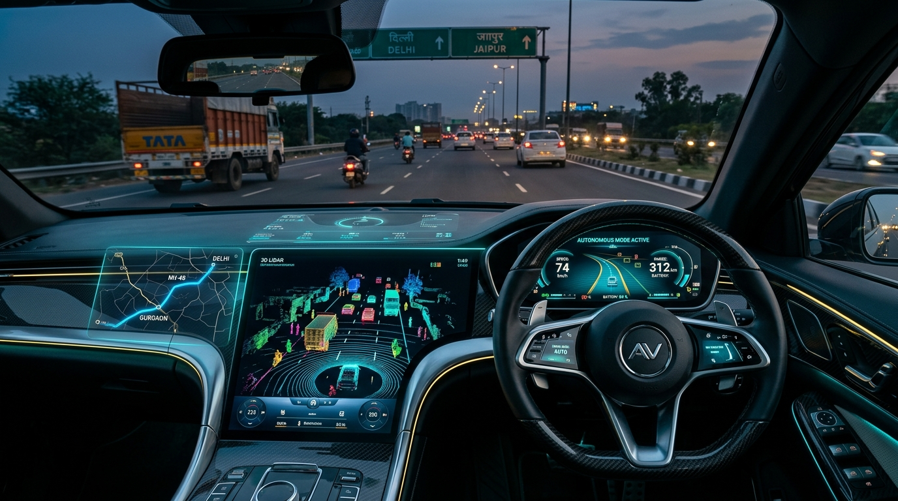
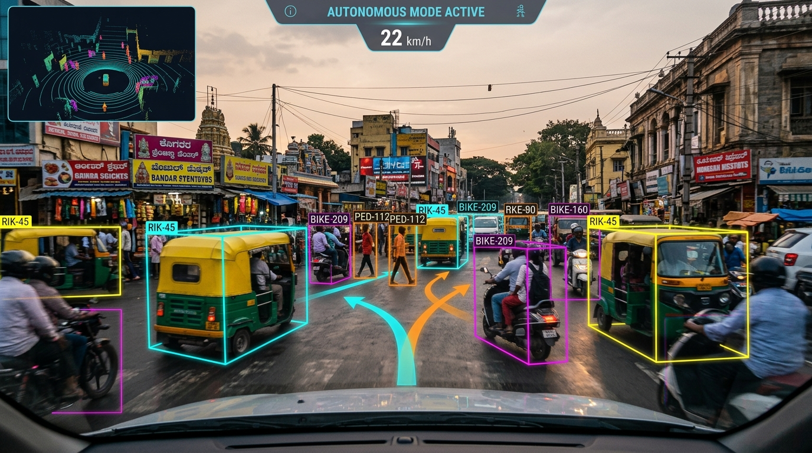
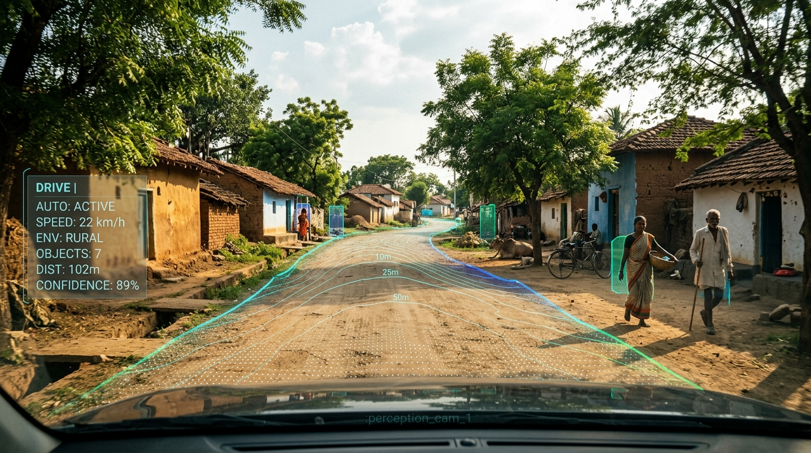
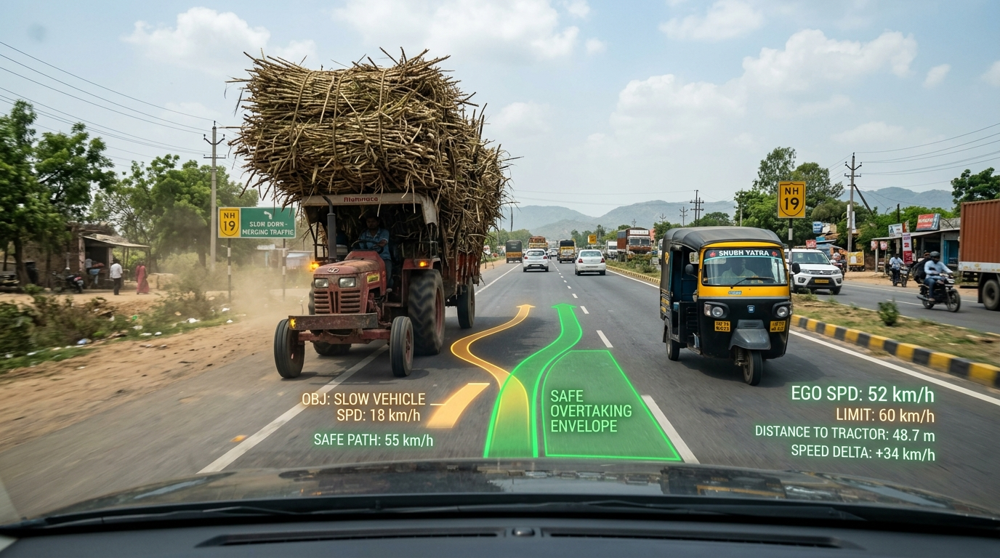
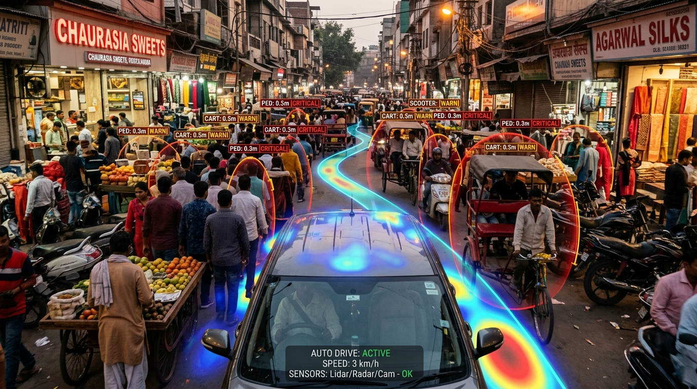
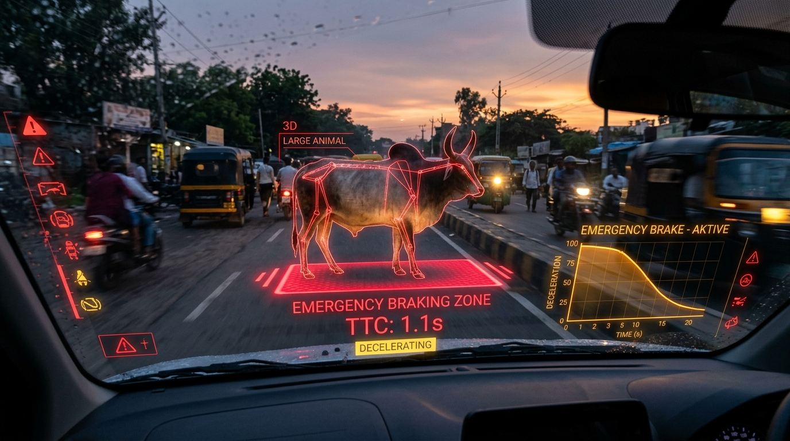

Western autonomous driving stacks collapse on roads without lane markings, where sacred cattle, aggressive three-wheelers, overloaded sugarcane tractors, and deep monsoonal potholes dictate navigation. Raasta.AI introduces real-time biological pose estimation, game-theoretic yielding, and dynamic potential field planning built specifically for Bharat.

Test how Raasta.AI dynamically avoids erratic Indian road hazards in real-time. Drag obstacles across the road, spawn cattle or auto-rickshaws, switch path algorithms, or toggle the Artificial Potential Field costmap gradient.
Rigorous edge-case benchmarks designed to stress-test autonomous perception, biological pose classification, and non-verbal traffic negotiation.
Autonomous navigation in India requires an entirely different perception and planning paradigm compared to Western SAE Level 4 geofences.
Over 68% of secondary and rural Indian arterial roads lack painted centerlines or edge markers. Traditional lane-centering algorithms induce severe steering oscillations or system disengagements.
Cattle do not respond to honking, have non-standard geometric profiles with curved horns and humps, and may freeze or reverse direction mid-stride upon headlight glare.
Unsignalized intersections operate on informal non-verbal negotiation, headlight flashing, hand gestures, and aggressive micro-yielding rather than strict priority rules.
Monsoon deluges create deceptive standing water puddles concealing axle-breaking craters. Path planning must avoid both deep potholes and sudden aquaplaning zones.
Tractors pulling double trailers with overhanging sugarcane bundles, iron rebar rods, or haystacks extend up to 3 meters beyond the rear axle with zero reflective markers.
Bazaars and market roads combine cycle-rickshaws, push-carts, scooters filtering through gaps, and pedestrian swarms with clearances under 30 centimeters.
Continuous telemetry stream measuring perception-to-actuation latency, trajectory smoothness, and CAN-bus steering inputs.
Explore synchronized perception streams from our test fleet navigating dense Indian corridors with real-time semantic labeling and trajectory projections.





Pioneering engineers and robotics researchers combining deep learning, motion planning, and automotive edge compute for India's roads.
System Architecture & Integration
Pipeline, Control Logic & Stateflow
Trajectory Prediction & Sensor Fusion (DL)
RoadRunner Scenarios & Vehicle Dynamics
HUD Interface, Visual Hierarchy & Dashboard
Closed-Loop Validation & Fault Analysis